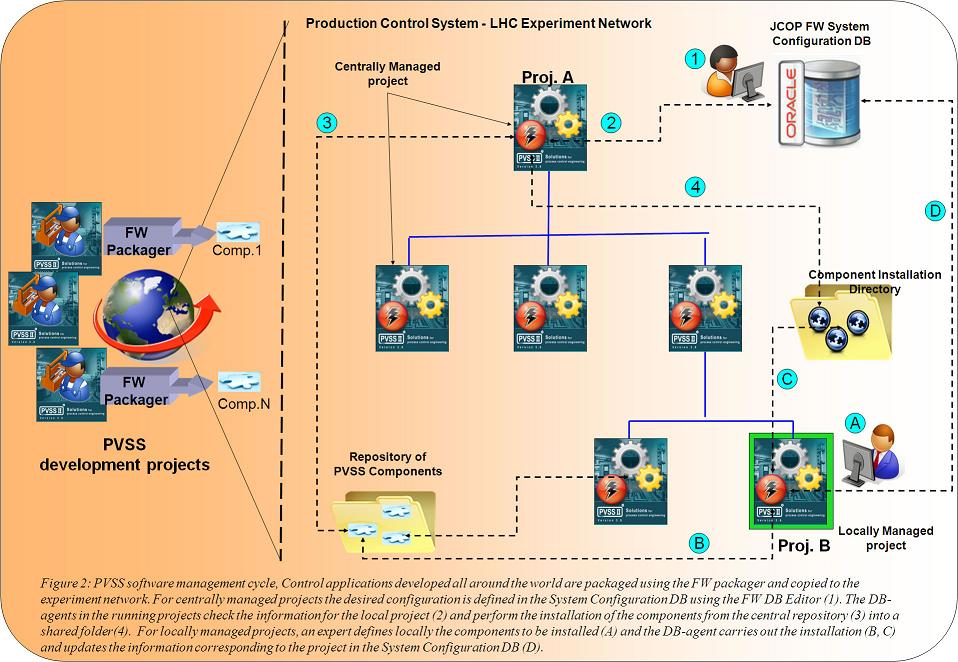

The Component Installation Tool of the JCOP Framework manages the installation of software component in PVSS-based applications. The tool can be used interactively by developers or in a centralized manner by the DCS teams of the LHC experiments. In the later approach the Component Installation Tool makes usage of the so-called System Configuration Database to store the current configuration of the projects and to handle installation/uninstallation/reinstallations of components triggered remotely and to manage centrally the configuration of the projects, e.g. remote definition of project paths and of the connections between the distributed peers in the system.
The tool distinguishes two possible management modes of the projects:
The architecture of the Component Installation Tool is shown in Figure 1.

Figure 1: Architecture of the Component Installation Tool
 1.7.1
1.7.1